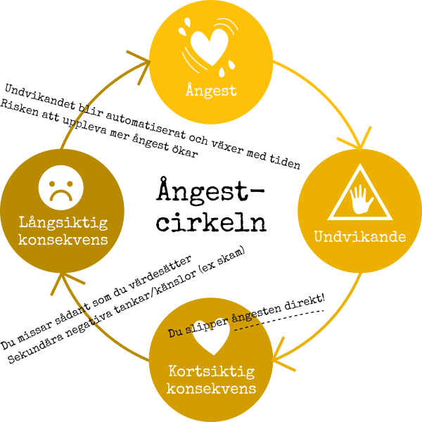
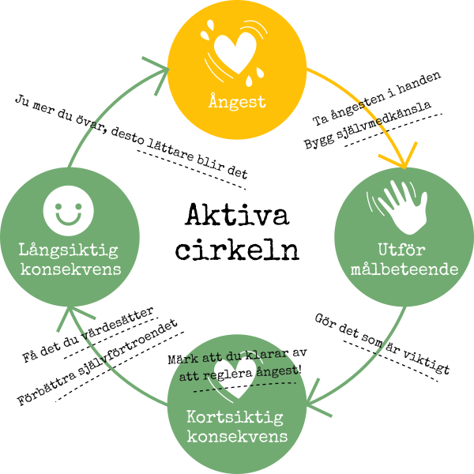

Argument för att byta undvikande mot aktivt deltagande
Många av de som börjar reflektera över sitt beteende brukar upptäcka att de ofta är oroliga och nervösa inför utmanande situationer. Ibland upptäcker de också att det de mest av allt är oroliga för är att känna ångest och obehag i de situationerna. Ditt målbeteende i det här självhjälpsprogrammet kanske handlar om att ge kritik till en arbetskollega, be chefen om mer stöd i arbetet, genomföra en presentation för dina kollegor på ett arbetsmöte, säga till dina barn att du vill att de hjälper till mer hemma eller att säga nej till en vän. Vad är det som väcker obehag hos dig i relation till din målsättning?
Har du inte ännu formulerat ett eller några SMARTa mål? Hoppa då tillbaka till materialet för vecka 1 och gör det nu – du kommer att ha stor glädje av det alldeles strax.
Ångest och rädsla hänger ihop
Ångest är intimt förknippat med rädsla. Båda reaktionerna aktiverar samma kroppsreaktioner. Du kanske känner igen rädsla och ångest som bland annat hjärtklappning, handsvett, spända muskler och ökad vaksamhet på det som du uppfattar som hotfullt. Utan dina förfäders väl utvecklade förmåga att uppleva rädsla och ångest skulle du inte finnas – rädsloreaktionen har varit den evolutionära fördel som gjorde att de snabbt satte sig i säkerhet när de konfronterades med livsfarliga hot. Du kommer kanske ihåg benämningen fight or flight-reaktioner från biologilektionerna?
Upplevelsen av rädsla brukar inte vara särskilt försynt, som i ”det kanske vore fördelaktigt att börja fundera på att sätta ned den gulliga björnungen så att den kan springa till den väldigt arga björnmamman där borta”. Rädsloreaktionerna är direkta och automatiska. Pang! Och så märker du plötsligt att du har lämnat björnungen i fred och springer bort från hotet. Inlärningen som sker i samband med rädsla brukar vara så stark att du sedan – omedvetet eller medvetet – till och med undviker platsen där du blev rädd.
Skillnaden mellan ångest och rädsla är den här: där rädsla handlar om reella hot (arg björnmamma) handlar ångest om härledda inre hot (tanken att kollegan ska avvisa dig, att chefen ska skälla ut dig för att du behöver hjälp, att barnen inte ska tro att du tycker om dem när du ställer krav eller att vännen ska tro att du inte tycker om hen). Med ’härledda inre hot’ menas att ångesten triggas av sådant som sinnet levererar, mer eller mindre medvetet: tänk-om-tankar och jag-borde-ha-gjort-så-istället- eller jag-måste-tankar.
När vi låter ångesten styra börjar vi undvika
Begrunda bilden nedan en stund. Börja längst upp och följ pilarna runt ett helt varv.

Som du ser finns det en stor och uppenbar fördel med undvikande: Du slipper ångesten direkt! Det är att du slipper ångest som är den stora vinsten med att handla i enlighet med ångestcirkeln.
Men det finns förstås några väldigt stora nackdelar med att låta ångestreduktion eller -eliminering styra livet.
För det första missar du sådant som är viktigt för dig i de situationer som du undviker. Om du till exempel har ångest inför tanken att du kan bli avvisad eller bortgjord om du går på en fest, och därför väljer att tacka nej, så missar du det viktiga som ångesten i sig påminner dig om: Den härledda rädslan att bli avvisad hänger ju ihop med en längtan efter närhet och gemenskap.
När du undviker ger du dig inte heller chansen att själv ta reda på om det härledda – tänkta – hotet faktiskt existerar eller inte. Då blir inlärningen istället att du måste fortsätta undvika varje gång du är rädd. Ditt liv börjar krympa. Det finns ju alltid något nytt att oroa sig för eller grubbla över. Eftersom vi som art under evolutionen har utrustats med en kraftfull förmåga att uppleva ångest – och en önskan om att slippa den – kan försöken att hålla ångesten borta få ”livet att krympa”. Det vill säga att du missar allt mer av det du värdesätter, både i relation till dina målsättningar som du formulerat när du jobbat med det här självhjälpsmaterialet och i din vardag i stort.
Tyvärr innebär det i sin tur att du kanske dessutom börjar tänka katastroftankar om kommande händelser och/eller klandra dig själv för att du har det svårt, vilket ofta är förknippat med känslor av skam. Du kan lägga märke till det i form av tankar som ”varför måste jag vara så dålig på ...”, ”jag måste skärpa mig ...”, ”jag kommer aldrig att klara av ...”. Och så vidare. Genom undvikande som fenomen hänger ångest därigenom också ihop med depression – och länken är dubbelriktad. När du undviker på grund av ångest riskerar du att bli nedstämd, eftersom du tappar kontakt med sådant som är belönande i livet (vänskap, närhet, utvecklande utmaningar och så vidare). När du är nedstämd riskerar du att utveckla nya ångestproblem, eftersom du genom undvikandet inför dig själv bekräftar (den felaktiga) slutsatsen att det enda sättet att slippa ångest är att fortsätta hålla dig borta från det som väcker ångest.
Du är inte ensam om att ha det så här. Det är en del av villkoren för allt mänskligt liv. Vi kämpar alla!
Du kan ersätta undvikande med aktivt deltagande
Det är väldigt förståeligt att man väljer att undvika jobbiga situationer. Undvikande leder nästan alltid till att de primära jobbiga ångestkänslorna (med kroppsliga symptom som exempelvis snabbare puls, spända muskler, svettningar eller bara vaga obehagskänslor i magtrakten) försvinner eller minskar.
Här är ett förmodligen jobbigt budskap: all forskning och all beprövad erfarenhet säger att det är genom att närma sig obehaget istället för att distansera sig från situationer som väcker obehaget som ångesten på sikt kan bli mindre. Samtidigt innehåller budskapet ett löfte: Genom att arbeta aktivt och flexibelt med att bryta undvikande (även i närvaro av ångest), så kan du forma ditt liv på det sätt du önskar.
Titta på den här bilden. Fundera på vilka av de understrukna fördelarna med att aktivera dig och söka upp olika slags situationer som väcker ångest som du själv kan relatera till just nu.

Skulle du vilja låta ångest bli en signal om att det finns något nytt att lära i situationen som väcker ångest, snarare än att du måste undvika situationen? Det hoppas vi! Vi har ett förslag på en metod som hjälper dig att börja lära dig av faktiska erfarenheter.
Börja göra beteendeexperiment
I den aktiva cirkeln finns det ett antal fördelar med att testa att utföra målbeteenden och att sedan utvärdera hur det gick. Det är det som kallas beteendeexperiment eller exponering.
Ibland är högt tempo och hög aktivitet i sig ett sätt att undvika känslor av ångest. Då gäller det att fundera på vilken funktion den höga aktivitetsnivån fyller. Om det handlar om minskning av ångest i olika situationer så är det inte den typ av ”aktivt deltagande” som avses här. Aktivt deltagande för en stressad person skulle mycket väl kunna vara att göra avslappningsövningar och komma i kontakt med sina känslor. Och att träna på att säga nej! Vi återkommer till det i vecka 5.
När du lite varsamt tar din egen ångest i handen och gör det som är viktigt för dig i ett beteendeexperiment så ...
- Gör du det som är viktigt – genom att observera och erkänna ångesten, utan att trycka bort den, kan du både få kunskap om vad som är viktigt för dig och få energi över att rikta uppmärksamheten mot det. Ångest och obehag sitter ofta intimt samman med värden. Till exempel är förväntansångest över en kommande presentation på arbetet förmodligen ett uttryck för att det är viktigt för personen att bli accepterad och att få delta i ett sammanhang med andra människor. Undvikande tar dig inte närmare det som är viktigt. Aktivt deltagande tar dig närmare det som är viktigt.
- Märker du att du klarar av att reglera ångest – undvikande bygger ofta på upplevelsen av att ångesten signalerar livsfara. En presentation på jobbet kanske känns livsfarlig (du kommer kanske ihåg att kroppen inte gör skillnad på rädsla för björnmammor och ångest inför en presentation på jobbet) men är sällan det. Genom att stanna kvar i situationen som du tidigare undvek ger du dig själv möjlighet att upptäcka att du faktiskt klarar av att reglera ned din ångest till hanterbara nivåer, ganska snabbt dessutom. Alla kroppsreaktioner går av rent biologiska orsaker ned över tid när du stannar kvar med full närvaro i situationen. Även ångest!
- Bygger du självmedkänsla – genom att observera och erkänna din ångest i situationer som många gånger tidigare har varit besvärliga för dig (genom att du varit i en kontext som varit bestraffande eller för att du under lång tid har undvikit liknande situationer) förbättrar du möjligheterna att acceptera obehaget. Att förstå varför du upplever ångest gör det lättare att tolerera den. Du förtjänar acceptans från dig själv både för det som har varit och det som händer just nu: Det är vad det är.
- Får du det du värdesätter – om du värdesätter att på lika villkor som andra vara en del av ett sammanhang med andra människor, så är det bara aktivt deltagande som ger dig möjlighet att uppnå det. Även om du deltar aktivt så får du inte det du värdesätter precis varje gång, men du ser i alla fall till att oddsen är till din favör precis varje gång!
- Förbättrar du ditt självförtroende och din självkänsla.
- Kommer du att märka att det går allt lättare med tiden – det du idag kämpar med är resultatet av att negativa förutsägelser om hur det kommer att gå i olika situationer har börjat sprida sig som ringar på vattnet. Samma fenomen kommer att göra att aktivt deltagande blir lättare med tiden – du kommer att med hjälp av erfarenhetsmässigt insamlade positiva förutsägelser om hur det kommer att gå (inklusive om din egen förmåga att utstå visst obehag) i olika situationer bli allt mer benägen att delta aktivt i både liknande och helt andra situationer i livet! Att utföra beteendeexperiment är att ge sig möjlighet att samla positiva erfarenheter.
Du kan vända upp och ned på den negativa spiralen så att den blir en positiv spiral.
Mina skäl att utföra beteendeexperiment
Med avstamp i argumenten ovan, vilka är dina egna skäl att börja utföra beteendeexperiment?
Mina skäl att utföra beteendeexperiment (PDF)
Denna och kommande veckor kommer du att få hjälp att utföra olika beteendeexperiment som bygger på dina första målsättningar som du började formulera i vecka 1. När du nu har läst det här avsnittet, har du hittat några ytterligare situationer och relationer att träna konstruktiv självhävdelse i? Lägg till även dem i arbetsbladet med SMARTa mål.